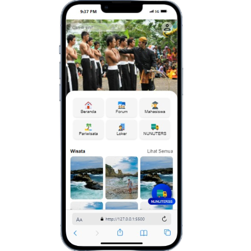
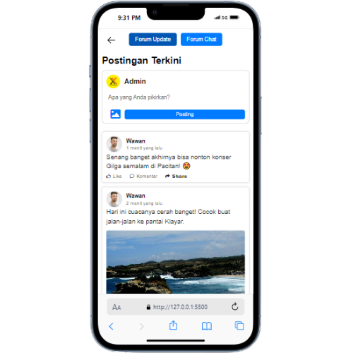
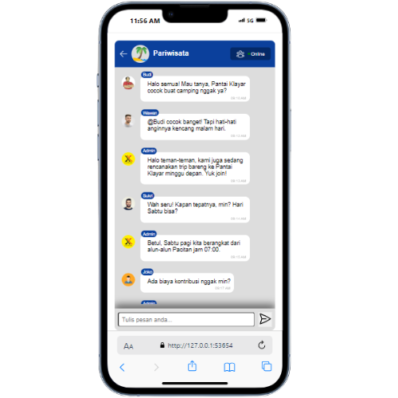

Nunuters adalah forum interaktif yang menyatukan berbagai channel diskusi seputar pariwisata dan budaya Pacitan, Jawa Timur.

Jelajahi Beragam Fitur Unggulan yang Mempermudah Aktivitas Anda
Temukan hidden gems di Pacitan melalui ulasan dan pengalaman dari warga lokal serta wisatawan.
Diskusikan seni, tradisi, dan kearifan lokal seperti Wayang Kulit, hingga upacara adat khas Pacitan, serta beragam Jenis Informasi Loker terkini
Ajak teman, wisatawan, dan masyarakat lokal berdiskusi langsung di berbagai channel yang disediakan.
Pecah forum jadi topik-topik spesifik biar lebih fokus dan mudah diikuti.
Kombinasi cerita dari warga lokal dan traveler bikin diskusi makin berwarna.
Update agenda kebudayaan dan kegiatan pariwisata langsung dari sumbernya.
Akses forum dari mana saja, kapan saja dengan tampilan responsif.
Lihat Berbagai Kegiatan Melalui Galeri Foto yang Tersedia

